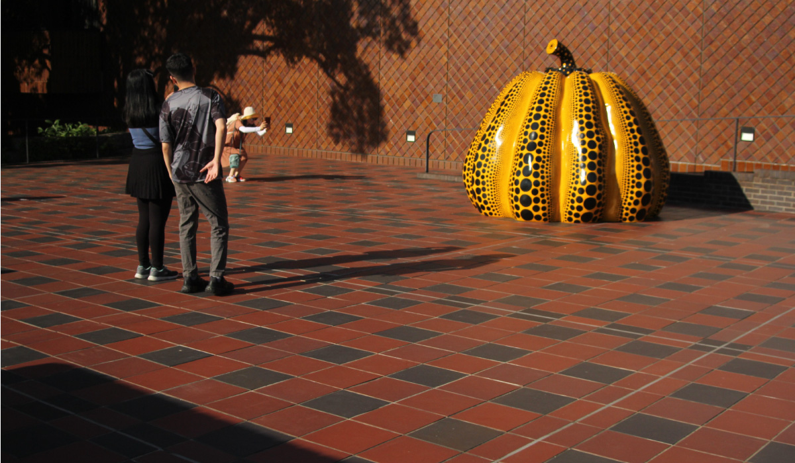
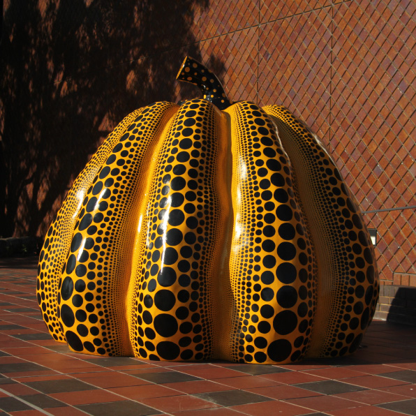

草間 彌生

日本の芸術家、草間彌生氏の『南瓜』は福岡市美術館の一つの目玉作品である。美術館のエスプラナードで
異彩を放つ色彩と水玉模様は人々の目を惹きつける。草間氏の屋外彫刻は日本各地で見られるが、
我が国で最初に屋外で展示された作品はが1994年に展開されたアートプロジェクト「ミュージアム・
シティ・天神’94 Fukuoka,Japan」の出品作として天神に設置されていたこの南瓜である。
草間氏は幼少期からカボチャの「愛嬌のある形」と「太っ腹の飾らぬ容貌」に惹かれ、「たくましい精神的力強さ」
を感じたと言う。可愛らしい意匠でありながら、圧倒させられるようなパワーをも持った作品だ。